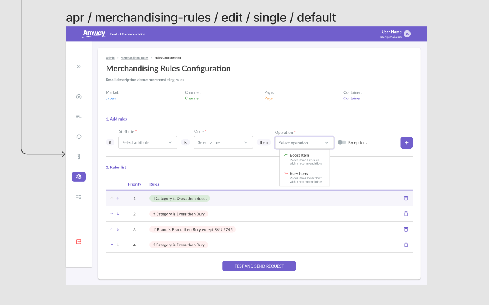
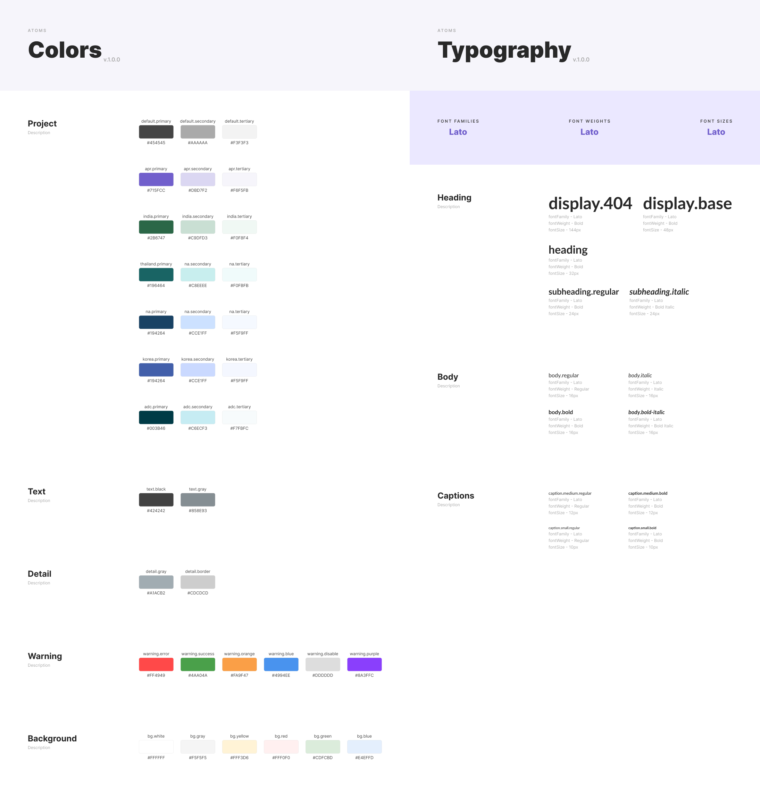
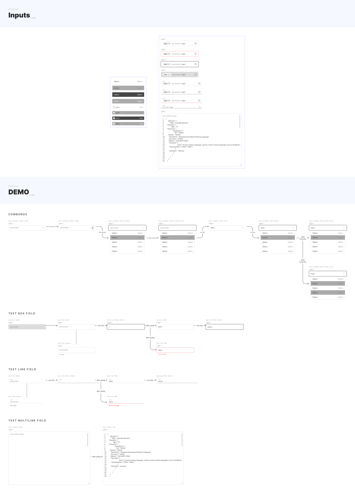
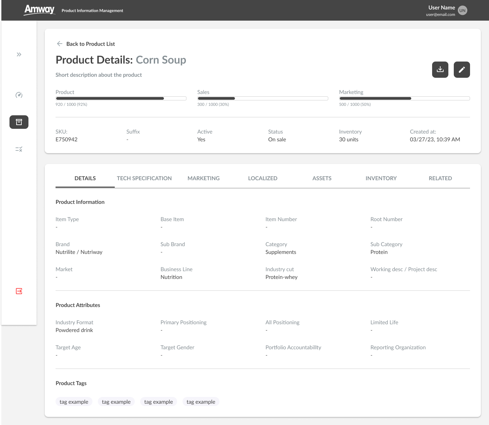

One product earned us five more.
Amway, a global leader in direct selling, needed custom solutions for both internal operations and customer-facing experiences. As Design Lead at KIS Solutions, I led design across the engagement — collaborating with cross-functional teams and managing designers through complex design and development cycles. We started with a single iteration of a Product Recommender. As its success unfolded, the client trusted us with a suite of additional products, each more complex than the last.
The remit covered six major projects: the Amway Product Recommender (APR), a Product Information Management (PIM) tool, a Content Compliance Reviewer, a Customer Data Platform, a Data Catalog, and a number of smaller initiatives. Each had distinct user groups, workflows, and technical requirements. My job was to deliver intuitive interfaces while keeping every product aligned with Amway’s business goals — and with each other.

Useful, usable, and three months to first market.
The journey began with a product recommender the client was using internally to test recommendation results across different filters. Amway needed a fast, configurable, reliable engine — one that could handle heavy website traffic while accommodating over forty recommendation models. I worked directly on the early designs, managing both interface complexity and the systems beneath, ensuring the engine met every technical and business requirement.
The APR was built and deployed to its first market in just three months. It saved Amway millions in commercial licensing fees while outperforming their existing enterprise software in both speed and efficiency. Click-through and conversion improved measurably — and 24% of all items sold on the platform ended up coming directly through the recommender.

One library, six products, no forks.
As we expanded design output across multiple products, consistency and scalability were the bottlenecks. I led the development of a comprehensive design system: a robust component library, style guide, and a fully tokenized variable structure in Figma. The system let the team scale design rapidly and consistently, and it was adopted directly by developers — who used it to build functional prototypes with minimal oversight.
“A design system is not a Figma library. It’s a contract between teams who don’t talk every day.”
This was more than a collection of reusable components. It was a foundational approach to product design that ensured quality, consistency, and speed across all of Amway’s applications — and the foundation that let the team move from one tool to six without the work compounding linearly.


Data-heavy by design — not by accident.
One of the largest challenges was managing the complexity of states, filters, and sorting options. The APR alone accounted for 40+ recommendation models. The PIM and Data Catalog handled global product datasets with multiple states and conditions. Designs had to be flexible without sacrificing usability.
We took a data-driven approach to understanding Amway’s business logic, collaborating closely with engineering to map every potential state, tag, and filter that would touch any tool. The interfaces let users toggle between views, apply multiple filters, and sort large datasets in ways that felt intuitive and fast — easier said than done. The approach got adopted as a best practice for similar internal tools across the company.


Engagement up. Compliance review days down to under an hour.
The most measurable impact came from the APR: 36% of website visitors clicked on a recommended product, and 20% of those clicks converted to purchases. The result was a major boost in sales — 24% of all products sold came from recommendations, generating millions in additional revenue.
Operationally, the design system cut design review time drastically and improved cross-team collaboration. The Content Compliance Reviewer moved the workflow from days to under an hour — review work that had taken reviewers manually combing through transcripts and videos was reframed by interviews with the reviewers themselves, then rebuilt around what they actually needed.
From a single APR to six major projects, we consistently met and exceeded the client’s goals. By leveraging design thinking and a scalable approach, we built tools that enhanced operations and made a measurable difference in markets across the world. The work was a personal milestone and a testament to a team that could drive innovation, streamline complex workflows, and deliver consistent results.